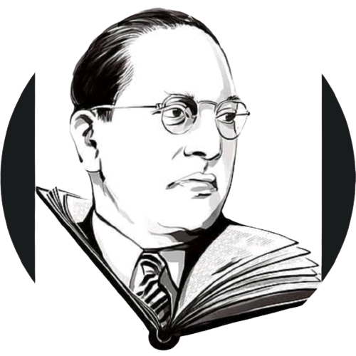

| Dr. AMBETHKAR key facts | ||
|---|---|---|
| Full Name | Bhimrao Ramji Ambedkar | |
| Born | 14 April 1891 | |
| Place of Birth | Mhow, India | |
| Died | 6 December 1956 | |
| Place of Death | New Delhi, India | |
| Resting place | Chaitya Bhoomi, Mumbai, India | |
| Parents | Father: Ramji Maloji Sakpal Mother: Bhimabai Sakpal | |
| Spouse(s) | Ramabai Ambedkar (m. 1906; died 1935) Savita Ambedkar (m. 1948) | |
| Political party | Independent Labour Party Scheduled Castes Federation | |
| Other political affiliations | Republican Party of India | |
| Alma mater | University of Mumbai (B.A., M.A.) Columbia University (M.A., PhD) London School of Economics (M.Sc., D.Sc.) Gray's Inn (Barrister-at-Law) | |
| Profession | Jurist, economist, academic, politician, social reformer, and writer | |
| Awards | Bharat Ratna (posthumously in 1990) | |